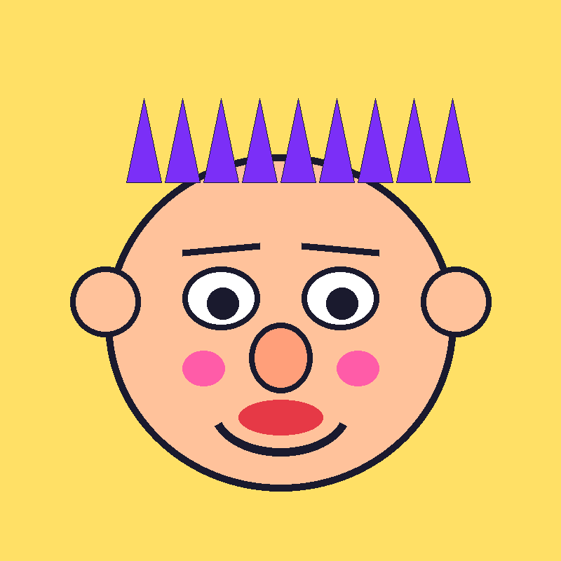
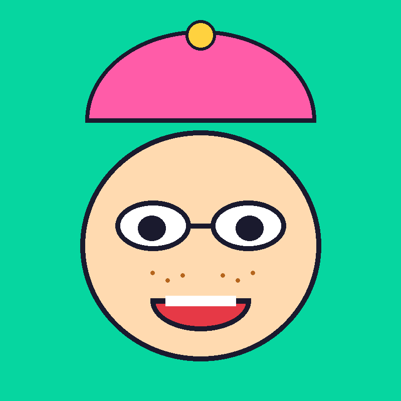
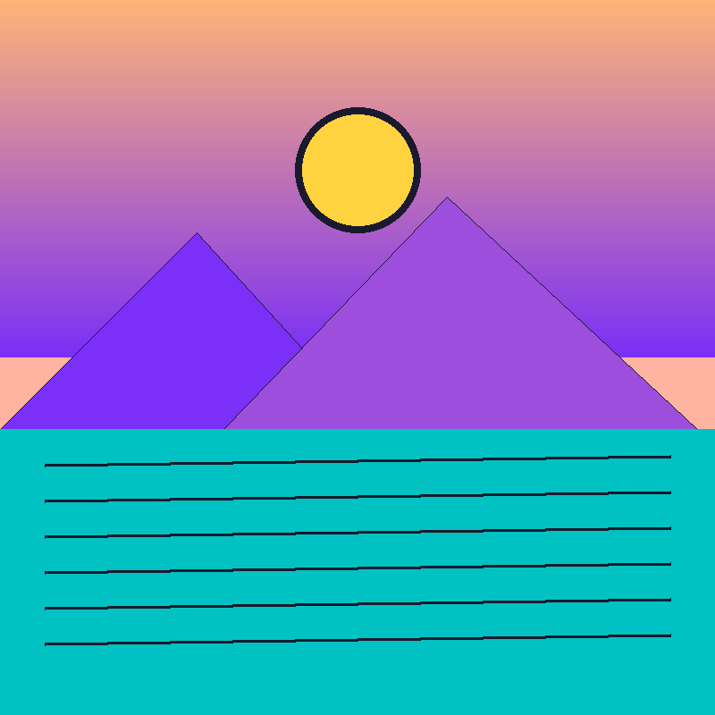
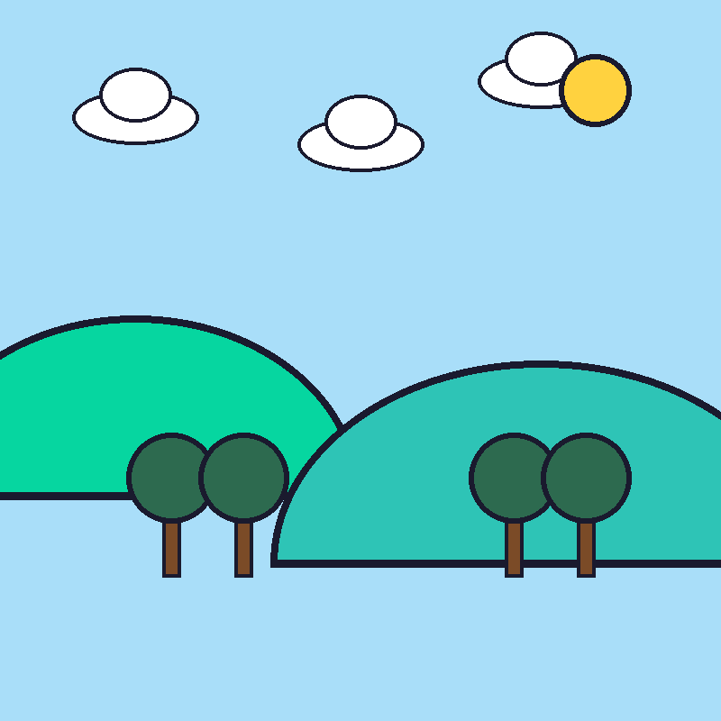
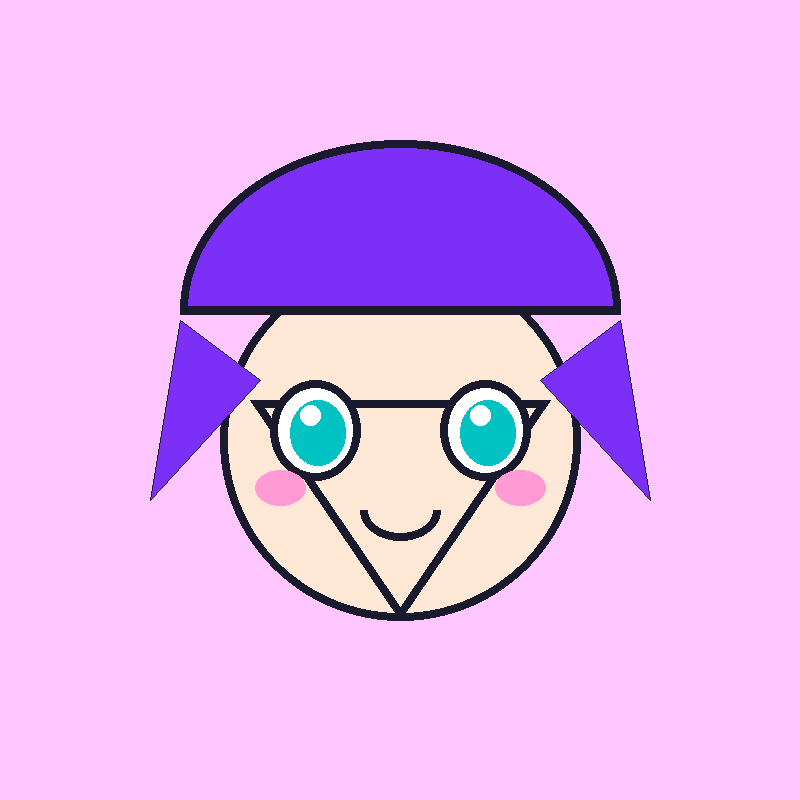
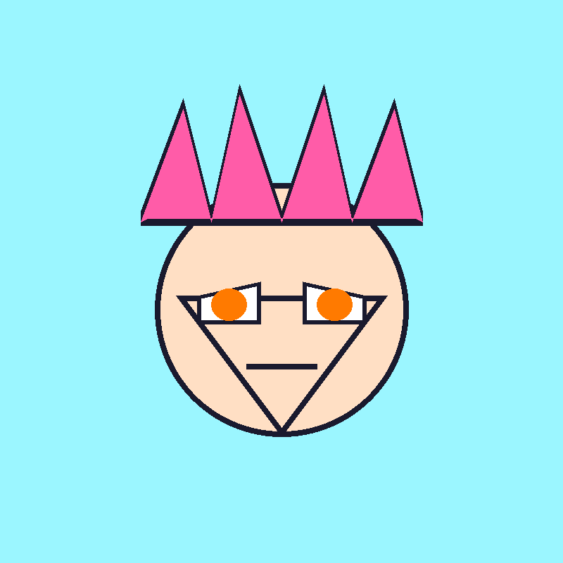

Dibujos con mucha onda
Caricaturas, paisajes y animé, todo hecho a mano y guardado acá para que lo mires con calma (o con caos, como prefieras).
Elegí una categoría






Caricaturas, paisajes y animé, todo hecho a mano y guardado acá para que lo mires con calma (o con caos, como prefieras).





